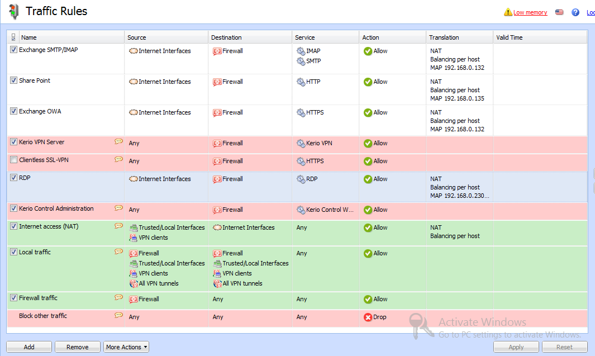

Проброс портов (публикация ресурсов в мир) с помощью Kerio Control 7
02.09.2012
Если опубликовать почтовый, веб и терминальный сервер через RRAS не слишком сложно, то в Kerio Control этот процесс менее очевиден, наверно сказывается дурная карма OpenSource 
Тем не менее, вот пример публикации почты, веб-серверов и терминального сервера из моей тестовой среды, для наглядности я покажу все правила трафика, но хочу предупредить что они не являются эталоном для продакшена, хотя с другой стороны все работает:

Если с первыми разделами все понятно, то с разделом Трансляции (там-то и настраивается NAT) могут быть вопросы, поэтому покажу как правильно настроить NAT на примере правила для RDP:
маршрутизация vpn trifle - в рабочем конфиге (использовал как подсказку для настройки микротика)